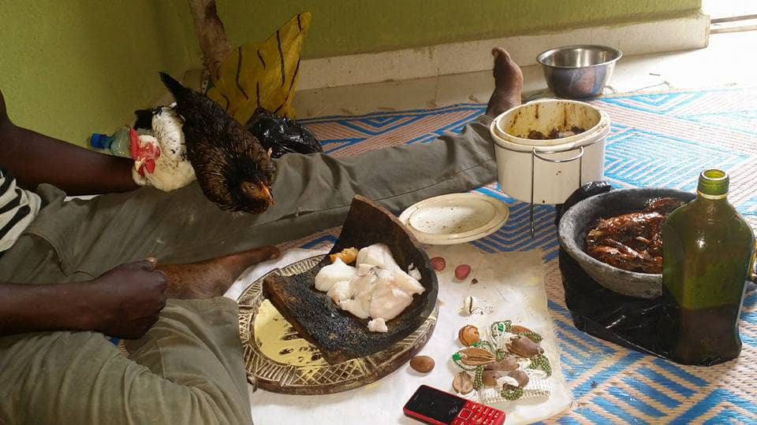
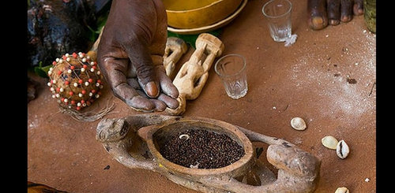

Magie Africaine
Découvrez notre héritage africain et laissez la magie opérer.


- 
- 
Magie Vodoun
"Plongez dans l'univers mystique de la magie noire vodoun africaine avec le Médium Danhinou pour retrouver l'amour, l'harmonie et le mariage."
Plongez dans le monde envoûtant de la spiritualité africaine avec Médium Danhinou.
Originaire d'Afrique précisement du Dahomey, nous avons un siège en Suisse.
Nous sommes les gardiens des traditions ancestrales depuis 15 ans.
Nous sommes les experts du retour d'affection, de l'union des couples, de l'amour passionné et du mariage.
Laissez-nous vous guider vers la félicité et l'épanouissement.
Rejoignez-nous pour une expérience unique où la magie opère afin que les cœurs se réunissent dans une danse envoûtante.
Découvrez nos rituels puissants pour rétablir l'harmonie et l'amour dans votre vie.
Vous êtes dans une déception amoureuse? Vous voudriez vous mariez? Vous désirez une femme? Votre relation n'avance plus et vous désirez mettre terme?
Votre problème est résolu!
Rituel ancestral pour raviver la flamme de l'amour et retrouver l'être aimé.
Cérémonie sacrée pour renforcer les liens et la complicité au sein du couple.
Rituel de libération pour mettre fin à une relation toxique et retrouver la paix intérieure.
Attirez l'amour, renforcez les liens affectifs et éliminez les obstacles de votre mariage.
Sortilège passionné pour vivre une histoire d'amour intense et inoubliable.
Découvrez notre héritage africain et laissez la magie opérer.
Plongez dans le monde mystique de la spiritualité africaine et découvrez des solutions uniques pour vos problèmes amoureux.
Transformez votre vie amoureuse aujourd'hui!
Contactez-nous dès maintenant pour une consultation personnalisée.
Les Maîtres Spirituels

Gardien des Rituels

Maîtresse des Sortilèges

Chaman de l'Amour

Prêtresse de la Passion
Chroniques Ensorcelés
Découvrez les rituels ancestraux pour une relation indestructible.

Comment contrer les influences négatives dans votre relation.

Les potions et charmes pour attirer l'amour véritable.
Ils nous ont fait confiance!

"Que voulez vous de plus ? Bah nous on sert que l'Afrique dispose de beaucoups de ma√Ætre exp√©rimentez üòéüòéüòé. Danhinou nous a aid√© donc essayez vous-m√™me üòâ"
- Marthe et Joshua
"Je suis heureux üòäüòä! Tr√®s heureux j'ai pu trouver Rachel ma compagne de vie. Personnellement, j'y croyais pas trop mais maintenant...Merci Danhinouüôå"
- Rachel et Michel
"Nulle doute le meilleur et le vrai. Ma Femme Anette et moi avions consultez beaucoups qui sont soit des faux ou des Arnaqueur."
- Anette et Richard TOMSON
"Le service client est incroyable ‚ù§Ô∏è! En plus j'ai eu un r√©sultat imm√©diat. J'ai trouv√© un copain et je suis tr√®s contente üòòüòò. Je vous recommande personnellemnt Ma√Ætre Dannhinou. "
- Margarette
"Nous avions eu des problèmes financiers , mais grâce à une consultation nous nous sommes débarassez de toutes les personnes de mauvaise Foi. Maître Dannhinou vraiment Merci"
- Jean et Suzanne
"J'ai ador√© mon exp√©rience ici ‚ù§Ô∏è. Je crois que je m'en passerai jamais et j'esp√®re √©galement pouvoir trouver une femme pour mon mariage. Pour le moment je f√™te ma vieüòÅüòÅ."
- Max MARTINComment fonctionnent vos rituels?
Nos rituels s'appuient sur des pratiques ancestrales transmises de génération en génération. Chaque cérémonie est personnalisée pour répondre à vos besoins spécifiques.
Quels sont vos tarifs?
Nos tarifs varient en fonction du type de rituel demandé. Contactez-nous pour une consultation personnalisée.
Puis-je annuler un rituel?
Il est possible d'annuler un rituel avant sa réalisation. Cependant, une fois la cérémonie commencée, aucune annulation n'est possible.
Combien de temps dure un rituel?
La durée d'un rituel varie en fonction de sa complexité et de vos besoins. Nous vous fournirons une estimation précise lors de la consultation.
Comment puis-je prendre rendez-vous?
Pour prendre rendez-vous, contactez notre équipe par téléphone ou par email. Nous serons ravis de vous accompagner dans votre démarche.
Galerie Mystique